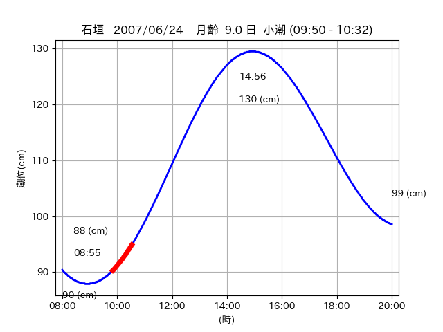
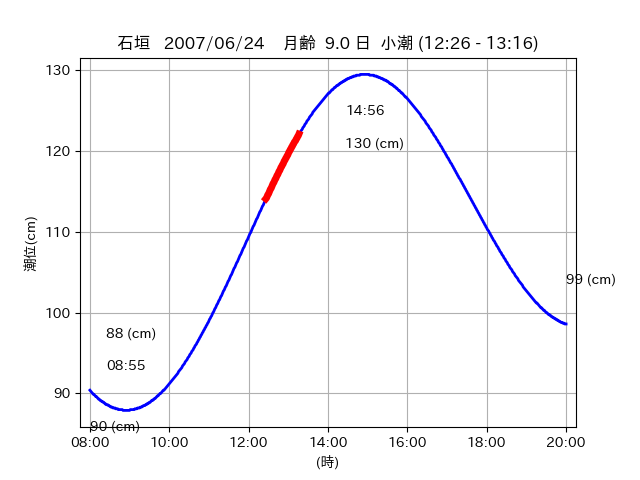
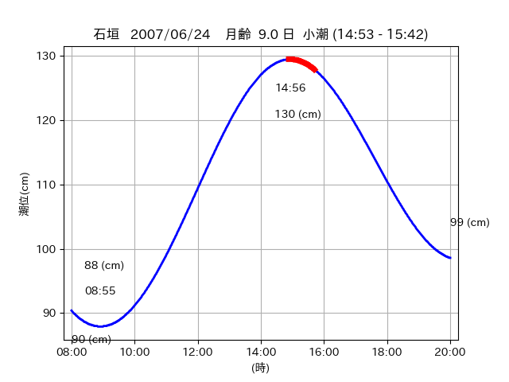

<!DOCTYPE html>
<html>
<head>
    
    <meta http-equiv="content-type" content="text/html; charset=UTF-8" />
    
        <script>
            L_NO_TOUCH = false;
            L_DISABLE_3D = false;
        </script>
    
    <style>html, body {width: 100%;height: 100%;margin: 0;padding: 0;}</style>
    <style>#map {position:absolute;top:0;bottom:0;right:0;left:0;}</style>
    <script src="https://cdn.jsdelivr.net/npm/leaflet@1.9.3/dist/leaflet.js"></script>
    <script src="https://code.jquery.com/jquery-3.7.1.min.js"></script>
    <script src="https://cdn.jsdelivr.net/npm/bootstrap@5.2.2/dist/js/bootstrap.bundle.min.js"></script>
    <script src="https://cdnjs.cloudflare.com/ajax/libs/Leaflet.awesome-markers/2.0.2/leaflet.awesome-markers.js"></script>
    <link rel="stylesheet" href="https://cdn.jsdelivr.net/npm/leaflet@1.9.3/dist/leaflet.css"/>
    <link rel="stylesheet" href="https://cdn.jsdelivr.net/npm/bootstrap@5.2.2/dist/css/bootstrap.min.css"/>
    <link rel="stylesheet" href="https://netdna.bootstrapcdn.com/bootstrap/3.0.0/css/bootstrap-glyphicons.css"/>
    <link rel="stylesheet" href="https://cdn.jsdelivr.net/npm/@fortawesome/fontawesome-free@6.2.0/css/all.min.css"/>
    <link rel="stylesheet" href="https://cdnjs.cloudflare.com/ajax/libs/Leaflet.awesome-markers/2.0.2/leaflet.awesome-markers.css"/>
    <link rel="stylesheet" href="https://cdn.jsdelivr.net/gh/python-visualization/folium/folium/templates/leaflet.awesome.rotate.min.css"/>
    
            <meta name="viewport" content="width=device-width,
                initial-scale=1.0, maximum-scale=1.0, user-scalable=no" />
            <style>
                #map_44c5316def5aa63cc84b9c1fb959f1b2 {
                    position: relative;
                    width: 2048.0px;
                    height: 1600.0px;
                    left: 0.0%;
                    top: 0.0%;
                }
                .leaflet-container { font-size: 1rem; }
            </style>
        
</head>
<body>
    
    
            <div class="folium-map" id="map_44c5316def5aa63cc84b9c1fb959f1b2" ></div>
        
</body>
<script>
    
    
            var map_44c5316def5aa63cc84b9c1fb959f1b2 = L.map(
                "map_44c5316def5aa63cc84b9c1fb959f1b2",
                {
                    center: [24.431, 123.761],
                    crs: L.CRS.EPSG3857,
                    ...{
  "zoom": 12,
  "zoomControl": true,
  "preferCanvas": false,
}

                }
            );

            

        
    
            var tile_layer_0bf357ad9ffa8d3e643e9eaf1b894c9d = L.tileLayer(
                "https://cyberjapandata.gsi.go.jp/xyz/seamlessphoto/{z}/{x}/{y}.jpg",
                {
  "minZoom": 0,
  "maxZoom": 18,
  "maxNativeZoom": 18,
  "noWrap": false,
  "attribution": "\u5730\u7406\u9662\u5730\u56f3",
  "subdomains": "abc",
  "detectRetina": false,
  "tms": false,
  "opacity": 1,
}

            );
        
    
            tile_layer_0bf357ad9ffa8d3e643e9eaf1b894c9d.addTo(map_44c5316def5aa63cc84b9c1fb959f1b2);
        
    
            var marker_ecc3b6a9614d57826da0b0d43164b99f = L.marker(
                [24.3498, 123.6806],
                {
}
            ).addTo(map_44c5316def5aa63cc84b9c1fb959f1b2);
        
    
            var icon_df2524f277c9588baa7b9cff45613faa = L.AwesomeMarkers.icon(
                {
  "markerColor": "orange",
  "iconColor": "white",
  "icon": "info-sign",
  "prefix": "glyphicon",
  "extraClasses": "fa-rotate-0",
}
            );
        
    
        var popup_d5f25b7bebd6afeb6a4613f2cf2c0496 = L.popup({
  "maxWidth": "100%",
});

        
            
                var html_48e8246c6c0aa63a5106dfe0304791b7 = $(`<div id="html_48e8246c6c0aa63a5106dfe0304791b7" style="width: 100.0%; height: 100.0%;"><table><tr><td></td></tr><tr><td><center>20070624 No.1 </center></table></td></tr></table</div>`)[0];
                popup_d5f25b7bebd6afeb6a4613f2cf2c0496.setContent(html_48e8246c6c0aa63a5106dfe0304791b7);
            
        

        marker_ecc3b6a9614d57826da0b0d43164b99f.bindPopup(popup_d5f25b7bebd6afeb6a4613f2cf2c0496)
        ;

        
    
    
                marker_ecc3b6a9614d57826da0b0d43164b99f.setIcon(icon_df2524f277c9588baa7b9cff45613faa);
            
    
            var poly_line_52db3b89b4c96e029b936deba8bbe36e = L.polyline(
                [[24.3498, 123.6806], [24.3473, 123.6775]],
                {"bubblingMouseEvents": true, "color": "#00FFFF", "dashArray": null, "dashOffset": null, "fill": false, "fillColor": "#00FFFF", "fillOpacity": 0.2, "fillRule": "evenodd", "lineCap": "round", "lineJoin": "round", "noClip": false, "opacity": 1.0, "smoothFactor": 1.0, "stroke": true, "weight": 3}
            ).addTo(map_44c5316def5aa63cc84b9c1fb959f1b2);
        
    
            var marker_5d2ecb1c3d427a1c7be3f7b520b7879a = L.marker(
                [24.3409, 123.6793],
                {
}
            ).addTo(map_44c5316def5aa63cc84b9c1fb959f1b2);
        
    
            var icon_e0eeb85e0b5544fb2fd0cb65e66d6f92 = L.AwesomeMarkers.icon(
                {
  "markerColor": "orange",
  "iconColor": "white",
  "icon": "info-sign",
  "prefix": "glyphicon",
  "extraClasses": "fa-rotate-0",
}
            );
        
    
        var popup_805a66e6126c9fc627488e9a07f03a2a = L.popup({
  "maxWidth": "100%",
});

        
            
                var html_301d43224a105dbfa02b4bb5e51b3887 = $(`<div id="html_301d43224a105dbfa02b4bb5e51b3887" style="width: 100.0%; height: 100.0%;"><table><tr><td></td></tr><tr><td><center>20070624 No.2 </center></table></td></tr></table</div>`)[0];
                popup_805a66e6126c9fc627488e9a07f03a2a.setContent(html_301d43224a105dbfa02b4bb5e51b3887);
            
        

        marker_5d2ecb1c3d427a1c7be3f7b520b7879a.bindPopup(popup_805a66e6126c9fc627488e9a07f03a2a)
        ;

        
    
    
                marker_5d2ecb1c3d427a1c7be3f7b520b7879a.setIcon(icon_e0eeb85e0b5544fb2fd0cb65e66d6f92);
            
    
            var poly_line_48cb20642bb3a35fd103395d0f942f04 = L.polyline(
                [[24.3409, 123.6793], [24.3441, 123.6798]],
                {"bubblingMouseEvents": true, "color": "#FF00FF", "dashArray": null, "dashOffset": null, "fill": false, "fillColor": "#FF00FF", "fillOpacity": 0.2, "fillRule": "evenodd", "lineCap": "round", "lineJoin": "round", "noClip": false, "opacity": 1.0, "smoothFactor": 1.0, "stroke": true, "weight": 3}
            ).addTo(map_44c5316def5aa63cc84b9c1fb959f1b2);
        
    
            var marker_5d1089a471f2221b7e1b815de330f549 = L.marker(
                [24.4284, 123.7619],
                {
}
            ).addTo(map_44c5316def5aa63cc84b9c1fb959f1b2);
        
    
            var icon_313063f98d17158394283a67e8f9f0b5 = L.AwesomeMarkers.icon(
                {
  "markerColor": "orange",
  "iconColor": "white",
  "icon": "info-sign",
  "prefix": "glyphicon",
  "extraClasses": "fa-rotate-0",
}
            );
        
    
        var popup_39a8c4f9bbb7da8889f05f397e096a07 = L.popup({
  "maxWidth": "100%",
});

        
            
                var html_d8d2a0979b9a6a7d80776becd86ecf87 = $(`<div id="html_d8d2a0979b9a6a7d80776becd86ecf87" style="width: 100.0%; height: 100.0%;"><table><tr><td></td></tr><tr><td><center>20070624 No.3 </center></table></td></tr></table</div>`)[0];
                popup_39a8c4f9bbb7da8889f05f397e096a07.setContent(html_d8d2a0979b9a6a7d80776becd86ecf87);
            
        

        marker_5d1089a471f2221b7e1b815de330f549.bindPopup(popup_39a8c4f9bbb7da8889f05f397e096a07)
        ;

        
    
    
                marker_5d1089a471f2221b7e1b815de330f549.setIcon(icon_313063f98d17158394283a67e8f9f0b5);
            
    
            var poly_line_132c1ced494fd876e31c0371304cbe80 = L.polyline(
                [[24.4284, 123.7619], [24.4343, 123.7605]],
                {"bubblingMouseEvents": true, "color": "#FF00FF", "dashArray": null, "dashOffset": null, "fill": false, "fillColor": "#FF00FF", "fillOpacity": 0.2, "fillRule": "evenodd", "lineCap": "round", "lineJoin": "round", "noClip": false, "opacity": 1.0, "smoothFactor": 1.0, "stroke": true, "weight": 3}
            ).addTo(map_44c5316def5aa63cc84b9c1fb959f1b2);
        
</script>
</html>